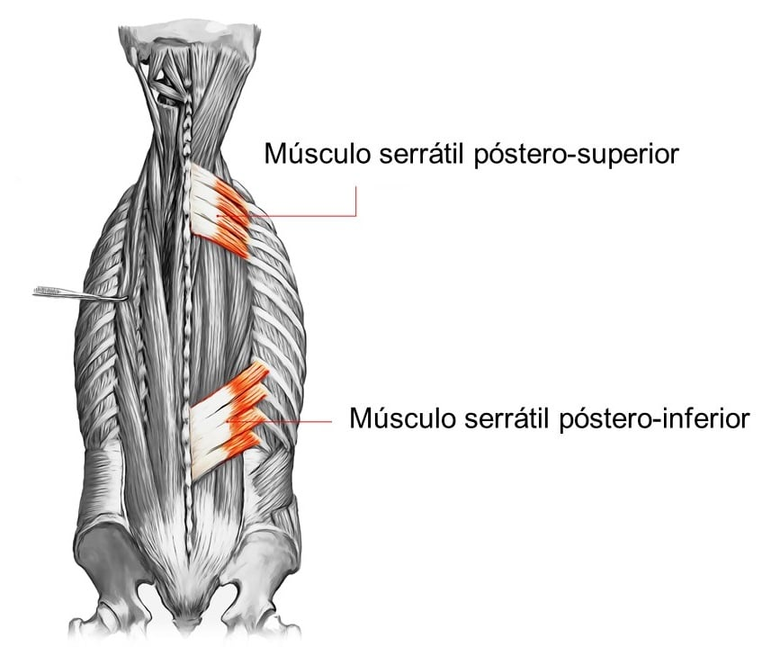
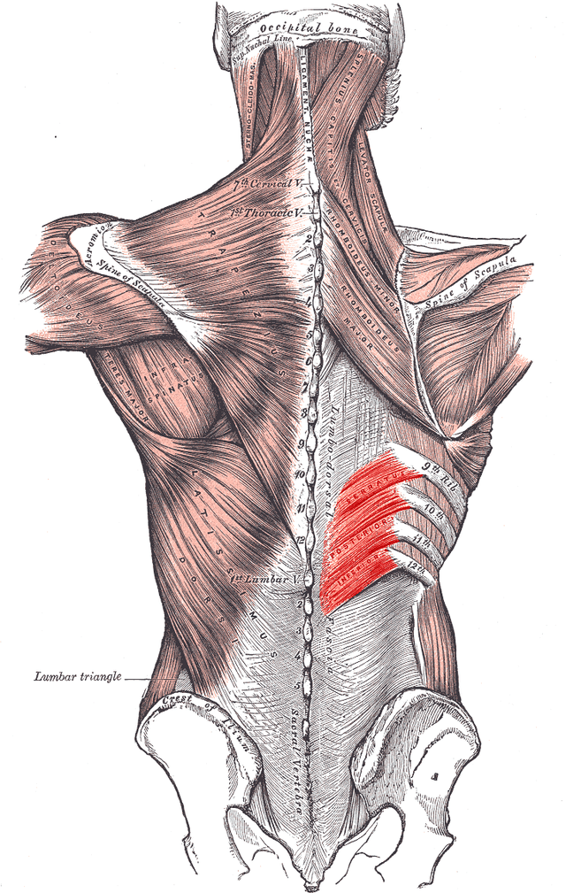
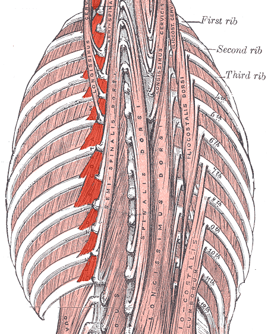
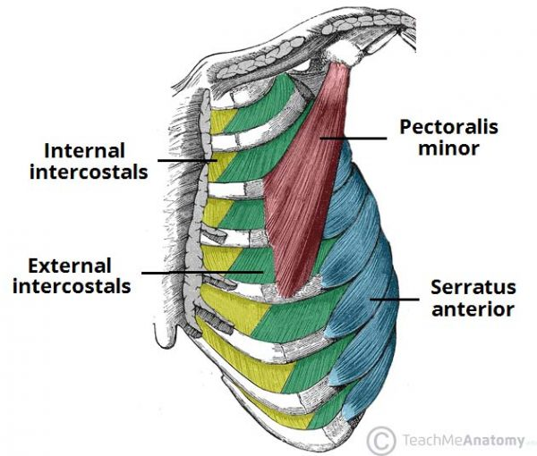
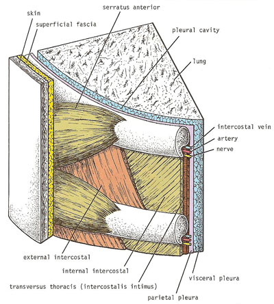
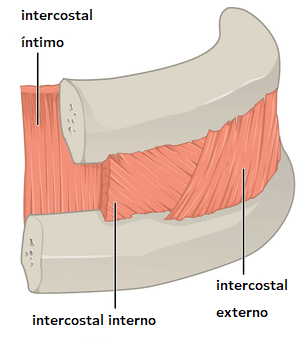
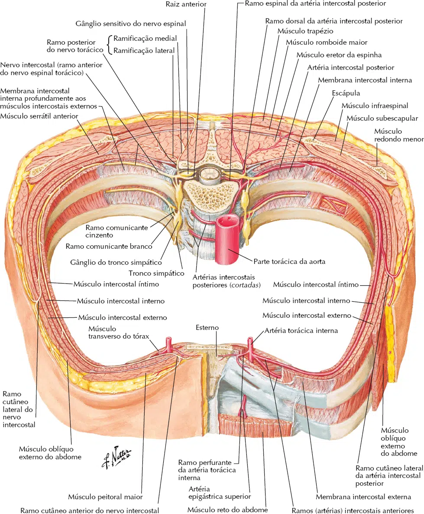
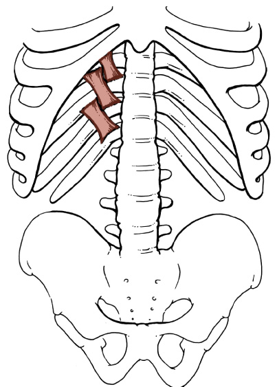
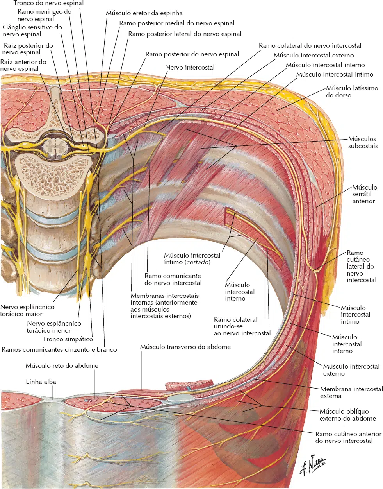
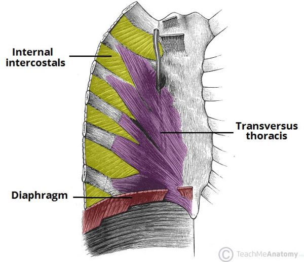

Serrátil posterior (superior e inferior), levantadores das costelas (intercostais), subcostais e transverso do tórax.
Serrátil póstero-superior
Inserção Medial: Processos espinhosos da C7 à T3. Inserção Lateral: Borda superior e face externa da 2ª a 5ª costelas. Inervação: Ramos dos 4 primeiros nervos intercostais. Ação: Elevação das primeiras costelas (ação inspiratória).

Serrátil póstero-inferior
Inserção Medial: Processos espinhosos da T11 à L3. Inserção Lateral: Borda inferior e face externa da 4 últimas costelas. Inervação: 9º ao 12º nervos intercostais. Ação: Depressão das últimas costelas (ação expiratória).

NETTER: Frank H. Netter Atlas De Anatomia Humana. 8 ed. Rio de Janeiro: Elsevier, 2024.
Levantadores das costelas
Inserção Superior: Processo transverso da 7ª vértebra cervical à 11ª torácica. Inserção Inferior: Face externa da 1ª à 12ª costela. Inervação: Ramos primários posteriores dos nervos C8–T11. Ação: Elevação das costelas (ação inspiratória) e estabilização intercostal.

NETTER: Frank H. Netter Atlas De Anatomia Humana. 8 ed. Rio de Janeiro: Elsevier, 2024.
Intercostais internos
Inserção Superior: Borda inferior da costela suprajacente (superior). Inserção Inferior: Borda superior da costela infrajacente (inferior). Inervação: Nervos intercostais correspondentes. Ação: Depressão das costelas (ação expiratória).

https://teachmeanatomy.info/
Intercostais externos
Inserção Superior: Borda inferior da costela suprajacente (superior). Inserção Inferior: Borda superior da costela infrajacente (inferior). Inervação: Nervos intercostais correspondentes. Ação: Elevação das costelas (ação inspiratória).

Intercostal íntimo
Inserção Superior: Borda interna da costela suprajacente. Inserção Inferior: Borda superior das costelas abaixo. Inervação: Nervos intercostais correspondentes. Ação: Parte interóssea: abaixa as costelas; Parte intercondral: eleva as costelas. Tudo isso na durante a respiração ativa (forçada).


NETTER: Frank H. Netter Atlas De Anatomia Humana. 8 ed. Rio de Janeiro: Elsevier, 2024.
Subcostais
Inserção Superior: Face interna da costela suprajacente. Inserção Inferior: Face interna da 2ª ou 3ª costela infrajacente. Inervação: Nervos intercostais correspondentes. Ação: Estabilização intercostal.


NETTER: Frank H. Netter Atlas De Anatomia Humana. 8 ed. Rio de Janeiro: Elsevier, 2024.
Transverso do tórax
Inserção Superior: Face interna do esterno. Inserção Inferior: Face interna da 2 á 6ª cartilagem costais. Inervação: Nervos intercostais correspondentes. Ação: Estabilização da parte antero-inferior do tórax.

https://teachmeanatomy.info/
NETTER: Frank H. Netter Atlas De Anatomia Humana. 8 ed. Rio de Janeiro: Elsevier, 2024.